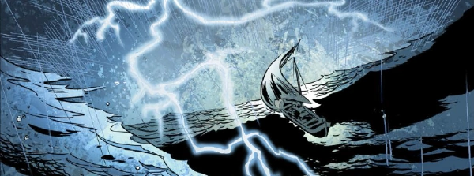

A fantasy epic very much reminiscent of The Red Seas (unavoidable because of Steve Yeowell being on art duties) provides an epic Norse setting: here be trolls, witches, zombies and werewolves! The tale is told partly in flashback, as the titular Black Shuck comes into his inheritance as son of King Ivar only to discover that the Kingdom is cursed by an undead Jotnar king intent on the recovery of his stolen treasure horde.
Evocative and action-packed, there is perhaps a built-in lack of sympathy for a main character who seems driven by the tumult of fate rather than anything more compelling. Very Norse, that.
Art by Steve Yeowell & Chris Blythe
| Story Title | Parts | Pages | w indicates a wraparound coverCovers | Year(s) | Issues | Writer | Artist | Colourist | Letterer |
|---|---|---|---|---|---|---|---|---|---|
| Black Shuck | 9 | 54 | 1891: Alex Ronald 1896: Glenn Fabry & Adam Brown 2 | 2014 | Reprints: M418 (supplement)1891-1899 | Leah Moore John Reppionvarious | Steve Yeowell | Chris Blythe | Simon Bowland |
| Sins of the Father | 10 | 61 | 1983: Glenn Fabry (art), Adam Brown (colours) 1992: Alex Ronald 2 | 2016 | Reprints: M419 (supplement)1983-1992 | Leah Moore John Reppionvarious | Steve Yeowell | Chris Blythe | Ellie de Ville |
| >> Teasers << | |||||||||
| Black Shuck | 1 | 1 | 0 | 2014 | SFS20 | n/a | Alex Ronald | <-- | n/a |
| year | episodes | pages |
| 2005 | 0 | 0 |
| 2006 | 0 | 0 |
| 2007 | 0 | 0 |
| 2008 | 0 | 0 |
| 2009 | 0 | 0 |
| 2010 | 0 | 0 |
| 2011 | 0 | 0 |
| 2012 | 0 | 0 |
| 2013 | 0 | 0 |
| 2014 | 9 | 54 |
| 2015 | 0 | 0 |
| 2016 | 10 | 61 |
| 2017 | 0 | 0 |
| 2018 | 0 | 0 |
| 2019 | 0 | 0 |
| 2020 | 0 | 0 |
| 2021 | 0 | 0 |
| 2022 | 0 | 0 |
| 2023 | 0 | 0 |
| 2024 | 0 | 0 |
| 2025 | 0 | 0 |
Comic strip data (excludes other content):